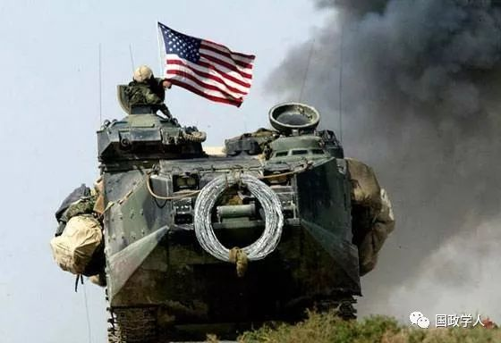

收录于合集

内容简介
[ 作者简介] 韩召颖，南开大学周恩来政府管理学院国际关系系教授; 宋晓丽，南开大学周恩来政府管理学院国际关系系2010 级博士研究生
[ 编辑] 杨艺华
[ 校对] 金琳
[ 来源] 《外交评论》2013 年 第 2 期
韩召颖
内容提要
美国发动伊拉克战争的决策从一开始就备受争议，文章拟从小集团思维理论视角，分析美国发动此次战争的原因。小布什领导下的“战争内阁”主导了此次决策的整个过程。决策具备引发小集团思维的前置因素: 小布什领导的“战争内阁”具有较强的凝聚力，小布什个人体现出一种命令式的领导方式，情报部门之间缺乏相互信任、沟通和协调，小集团成员具有相似的从政经历，以及受到“9 ·11”恐怖袭击的冲击。决策的小集团思维表现突出，影响明显。小布什领导下的“战争内阁”对萨达姆政府存在着独裁政权等刻板印象，认为伊拉克在发展大规模杀伤性武器，如果与基地组织结合，将严重威胁到美国的安全。他们忽略负面的反馈信息，施压于内阁中持异议的成员，有意识地去寻找能够对伊动武的情报信息，把已确定的行动方案作为唯一正确、合理的方案，缺乏对潜在风险的细致评估权衡。小布什政府对伊战争决策明显受到了小集团思维这种非理性心理认知的影响。
[ 关键词] 伊拉克战争 小布什政府 “战争内阁” 小集团思维

2011 年 12 月 15 日，美国驻伊拉克部队举行降旗仪式，标志着长达九年的伊拉克战争落下帷幕。这场战争从一开始就备受争议。2004 年 10 月 4 日，美国国防部长拉姆斯菲尔德公开否定了小布什政府有关“伊拉克拥有大规模杀伤性武器”和“萨达姆政权与基地组织有关系”的开战理由。这使得人们对美国发动伊拉克战争的决策提出了更深的质疑。从伊拉克战争爆发到结束，美国发动伊拉克战争的动机和原因一直是国际关系研究中的热点问题，产生了许多研究成果。
这些研究的解释路径大概可以概括为国际结构、国家层面、决策群体和总统个人四个层面。从国际结构来说，冷战结束后，“两极”体系转变为“单极”体系，失去了苏联的制衡，美国从此一家独大，可以为所欲为。“9 ·11”事件后，为了维持和巩固其霸权秩序，美国假借反恐之名，未经联合国授权，发动了对伊战争。从国家层面来看，美国“倒萨”有诸多动机，既有反恐防扩、维护本土安全的一面，同时也意欲借此推进中东地区的“民主”、争夺石油等利益; 此外，国内的新保守主义思潮提倡美国使用武力来追求其理想和利益，也是美国发动此次战争的一个重要原因; 军工复合体、一般的民用企业和跨国公司以及一些职业“政治家”组成的“战争利益集团”，受到“战争红利”的驱使，推动了此次战争的爆发。 在政府中的决策群体层面，国内外学者认为情报失真和误判问题 、心理认知 、政府内部的官僚斗争以及决策程序中存在的具体问题 ，一定程度上促成了美国“倒萨”。在总统个人层面，小布什的个性、领导方式和决策风格备受关注。在对伊拉克动武的决策上，小布什发挥了最直接、也是最具有决定性的作用。他个性容易冲动、相信宿命并且不愿深思熟虑，表现得更像一位“好战的总统”，决策中崇尚道德式领导方式( moral leadership) ，管理上喜欢秘密、快速和自上而下的控制，推动了战争的爆发。也有学者运用层次分析法解读伊拉克战争，从国内社会、国家与体系三个层面分析美国发动伊拉克战争的动机。 以上研究为认识美国对伊动武的动机提供了有益的探索。本文拟从小集团思维理论的视角，考察美国发动伊拉克战争的原因，探讨和分析小布什及其“战争内阁”对伊动武的具体决策过程。
一、小集团思维理论的基本框架
一般而言，国家安全政策大都是由政府高层人数有限的较小集团做出。 瓦莱丽·赫德森认为这种小集团的成员人数大约为 15 人或者更少，而多尔蒂和普法尔茨格拉夫则认为其成员人数一般是 12—20 人之间。 针对这一群体决策的特点，美国学者欧文·贾尼斯 1972 年提出了小集团思维的概念与基本理论框架。小集团思维特指在群体决策过程中，“小集团成员试图深深卷入一个凝聚力很强的群体中，当成员追求全体一致的需要压倒了慎重地评估备选方案时而陷入的一种思维模式”。小集团思维理论汲取了社会心理学、政治学和历史学等诸多学科的营养，尤其从社会心理学的群体动力学( group dynamics) 得到启迪。小集团思维理论认为，制订对外政策的国家领导和政府团体并非都是理性的。其基本理论假定为: 首先，在处理复杂任务方面，小集团往往比个人更占优势; 此外，该理论挑战了之前一贯公认的“群体成员间的强凝聚力可以提高绩效”的命题，认为在特定前提条件下，强凝聚力反而会降低群体决策绩效。 以下从小集团思维成立的前提条件、症状表现以及其对决策的影响等几个方面阐述小集团思维理论的主要内容。
( 一) 引发小集团思维的前提条件
小集团思维理论成立的前提条件有:
1 ．小集团的凝聚力
贾尼斯指出，“小集团凝聚力”的主要表现为: 亲密性( amiability) 和团队精神(esprit de corps) 。如果决策集团成员发展了亲密的友谊关系和团队精神，他们之间的竞争意识就会减弱，并且渐渐信任对方甚至容忍异议。小集团越团结，其成员就越慎重地审视自身的言论，以免发表异议而被孤立。
2 ． 组织的结构缺陷
( 1) 合理建议的隔离;
( 2) 缺乏公正的领导，领导往往把自己的偏好强加到小集团成员中;
( 3) 缺乏有条理的决策程序规范，阻碍了系统地搜集与评估信息;
( 4) 小集团成员存在同质性，在背景和价值观方面有着相似性; 3． 特定刺激情境
( 5) 小集团成员面临短时间内找到方案、并且期望能胜过领导所提出的方案的压力;
( 6) 自尊低落，可能原因如下: 小集团刚刚经历过一次失败经历; 当前决策任务艰巨; 决策成员在是否应打破现行道德标准来寻找可行方案上陷入道德困境。
以上前提条件对小集团思维的产生发挥着不同的作用。 其中至关重要的是小集团凝聚力和特定刺激情境，而组织的结构特征属于中间变量，则次之。 小集团凝聚力与特定的内外部刺激情境以及组织的结构缺陷交互作用，因而引发小集团寻求一致的倾向，导致小集团思维的出现。
( 二) 小集团思维的表现症状
小集团思维具体有八个表现，贾尼斯把这些表现分为三类:
1 ．过高估计小集团的能力和道德感
( 1) 坚不可摧的错觉。小集团部分或所有成员认为本群体内部团结一致、无懈可击，对小集团本身的能力过于自信。这种错觉容易导致盲目乐观和冒险精神，以至于成员难以冷静地权衡决策后果。
( 2) 对小集团的内在道德性深信不疑。小集团成员因而忽视群体决策的伦理与道德后果。
2 ． 封闭式思考
( 3) 小集团行为合理化。即小集团打压甚至完全不顾警告信号和其他的否定性信息，把已确定的行动方案当成唯一正确、合理的选择。
(4) 存在关于对手的刻板印象。“正如小集团成员对自身的能力和道德感盲目乐观一样，他们也倾向于视对方为软弱或邪恶”。 小集团视对方似魔鬼般邪恶，如果试图与之谈判将非常罪恶，而且有妥协想法的成员更是软弱和愚蠢。
3 ． 来自寻求一致的压力
(5) 成员自身的自我审查。小集团成员贬低自身疑惑和异议的重要性，倾向于和小集团的思想主流保持一致。
(6) 全体一致的错觉。成员自身的自我审查和从众压力维持了小集团的表面一致。同时，成员认为保持沉默意味着表示同意的看法，也助长了这种错觉。
(7) 向持异议者施加压力。小集团直接施压于对主流观点和解决方案持异议的成员。
(8) 思想的捍卫者。小集团中某些成员自命为意见一致的守护者，有意隐藏不利于保持意见一致的信息，并对有疑义与异议的成员进行引导、施压，来保护决策的有效性和合法性。
**显而易见，来自寻求一致的压力直接导向了一种过度寻求一致的趋势，而过高估计小集团的能力和道德感、封闭式思考则对这种过度寻求一致的趋势推波助澜，最终维持了小集团表面的 “一致”。**尽管追求一致的趋势在团体遭遇失败或者面临危机等情况下能够维持士气，但其所发挥的积极作用一般为小集团决策的错误和低效所抵消。所以，“当一个决策小集团表现出所有或者大部分的小集团思维症状时，其成员就会低效地完成他们的集体任务，可能最终导致没能完成集体目标”。
在小集团决策过程中，观察决策集团是否表现出这些症状，可以判断其是否陷入了小集团思维。 但是在小集团决策案例研究中，陷入小集团思维的决策集团往往只表现出部分症状，很难同时发现所有症状。总之， “小集团越是频繁地表现出这些症状，其决策质量也就越差”。
( 三) 小集团思维对决策过程的影响
当决策团体表现出大部分小集团症状时，对决策的过程就会产生不良影响，甚至造成缺陷决策，降低决策的成功几率。缺陷决策症状为:
(1) 对可供选择的替代方案缺乏调查与评估;
(2) 对目标评估不足;
(3) 对偏好选择的预期风险考虑不够;
(4) 欠缺对初始放弃方案的重新评估;
( 5) 信息搜集不足;
( 6) 偏颇地对待信息;
( 7) 未规划应对突发事件的行动方案。
小集团决策是一个动态和阶段性的交互过程，所以，小集团思维是一个贯穿在整个团体决策始终的过程，从问题界定、信息收集、方案生成、做出评估直到最后的决议，都有可能发生小集团思维。因此，小集团思维对小集团决策结果的影响，其实就是对整个决策过程的影响。
该理论的基本框架由三个部分组成，即引发小集团思维的前置因素、小集团思维症状的表现和小集团思维对决策过程的影响( 参见图-1) 。在这种小集团中，凝聚力和特定刺激情境，再加上中间变量——组织结构缺陷——的影响，引发追求一致的倾向，进而使小集团表现出了八种症状，这些症状对决策过程会产生不利影响，最终降低决策的成功几率。
从分析单位的范围来看，与组织过程和官僚政治模式不同，小集团思维理论运用了社会心理学领域中的群体动力学视角，而且把研究对象的范围缩小到政府决策高层的决策过程。 从集团内部互动来看，与官僚政治模式中参与者通过讨价还价的方式来解决集团内部冲突不同，小集团思维模式中成员通过追求一致的方式来避免集团内部冲突。 小集团思维理论解释的问题领域是政府决策高层造成的决策失误和失败议题，其研究目的是改进决策质量、提高决策绩效。
小集团思维理论也有其局限性。 小集团思维与决策失误甚至失败并非一种完美的因果关系，前者只是后者的充分而不必要条件。小集团思维理论的因果机制为，前提条件导致存在缺陷的决策过程，这种存在缺陷的决策过程进而又可能引发不利后果。然而，斯卡佛和科瑞罗通过定量研究得出结论: 引发小集团思维的前提条件不仅导致了存在缺陷的决策过程，也同时产生了不利后果( 参见图-2) 。而且，小集团思维理论涉及的变量甚多，其演绎和阐释并没有严格的因果链条，对于该理论的验证演绎出众多研究议程，以至于有学者认为小集团思维的假设并没有严格地进行检验，“小集团思维现象缺乏实证支持，基本的假设也缺乏实证支持”，贾尼斯对案例的分析牵强附会。 在运用小集团思维理论时，还应该充分考虑到不同的政治、文化和社会背景等对小集团的影响。小集团思维在一个权力集中和制度制约较少的社会中所造成的不良后果，可能比在一个权力制约多元平衡的社会中造成的不良后果更为严重; 在官僚机构的底层( 个体缺乏独立性，很少表达自己) 所造成的不良后果，比在官僚机构的顶层( 个性鲜明的人能表明自己的态度) 所造成的不良后果更严重。 总而言之，作为对外政策分析中的一个独特视角，尽管小集团思维理论存在诸多局限，仍然无法否认该理论对小集团决策研究作出的卓越贡献。

总统及其顾问班子是美国国家安全政策决策的最重要群体。小布什领导下的“战争内阁”就是贾尼斯“小集团思维理论”中所说的这样一个小集团。那么，在美国对伊动武的决策过程当中，小布什领导下的“战争内阁”是否存在小集团思维现象?这种小集团思维又对其决策议程产生了什么样的影响呢?
二、对伊战争决策中的小集团思维: 前提条件
**“ 9·11”恐怖袭击发生后，小布什政府为维护国家安全，发动了伊拉克战争，形成了所谓的“战争内阁”。它由小布什身边最亲近的那些高级顾问组成，包括: 副总统切尼、国家安全事务助理赖斯、国务卿鲍威尔、副国务卿阿米蒂奇、国防部长拉姆斯菲尔德、副国防部长沃尔福威茨。其他政府成员，例如白宫办公厅主任卡德、参谋长联席会议主席迈尔斯将军、中央司令部司令弗兰克斯将军以及中情局局长特内特等，在必要时也会参加会议。**这些人都参与了发动伊拉克战争的决策，但由于地位和权力大小的不同，他们各自发挥的作用也不尽相同。 然而，可以肯定的是，小布什及其 “战争内阁”主导了美国发动伊拉克战争的整个决策过程。
就伊拉克问题而言，“9·11”事件是小布什政府对伊政策的分水岭。 小布什上台伊始 ，对伊虽然采取较克林顿政府时期强硬的政策，但并没有推出新的政策建议，基本上沿袭了克林顿的双重遏制政策。在这一时期， **以武力方式推翻萨达姆政权还未被提上小布什政府的主要议事日程。然而，白宫的政策随着 “9 ·11”事件的发生而改弦更张。2002 年 1 月 29 日，国情咨文的发表和“小布什主义”的出台，标志着小布什及其“战争内阁”在对伊问题上发生明显改变并开始寻求一致。**小布什在讲话中向世界宣布朝鲜、伊拉克和伊朗是“邪恶轴心”，鉴于“邪恶轴心”国家正在寻求发展大规模杀伤性武器，并可能向恐怖分子提供这些武器，美国政府将与其作斗争，并将继续打击恐怖主义，保卫国家安全。自此，小布什政府的“邪恶轴心说”将大规模杀伤性武器、恐怖主义与伊拉克联系到了一起，从而把伊拉克问题提上了其政治议程。
( 一) 凝聚力
**贾尼斯认为，衡量小集团凝聚力的标准，是关系亲密程度和团队精神。凝聚力越高，小集团成员就越容易彼此信任。在小布什及其 “战争内阁”中，我们可以清晰地看到其强大的凝聚力。**小布什非常信任自己的顾问，强调自己周围都是些“善良、坚强、能干和聪明的人”，“他们明白美国的使命是要带领世界走向和平”。 对顾问能力和人格的信任，有助于小布什建立起与顾问班子的亲密关系和团队精神。“战争内阁”成员也都明确表示忠诚于总统和国家，反复强调他们“服务总统”的决心。 2003 年初，《新闻周刊》记者就如何达成和维持和谐的关系问题，采访了一些小布什顾问班子中的成员，如拉姆斯菲尔德、鲍威尔、切尼和赖斯等。他们说，总的原则是相信总统的决断力，并遵照总统定下的“基调”协调处理各自的工作。
“战争内阁”成员之间交往甚多，关系也比较亲密。 拉姆斯菲尔德曾两度与沃尔福威茨并肩工作: 一次是 1996 年一同为鲍勃·多尔竞选总统出力; 一次是 1998 年在导弹防御委员会供职。而沃尔福威茨也曾做过切尼的顾问。鲍威尔与阿米蒂奇本来就是朋友。虽然他们的见解时有不同，但是有着共同的默契，即“服务”总统。他们大多数人在政府高层工作多年，彼此非常熟悉，所以相互抱有信心，相信对方能公正、谨慎地处事，而不必过分担心“官僚倾轧”。 在 “9 ·11”恐怖袭击发生后，国家处于危急时刻，这些内阁成员身处风口浪尖，更加凝聚团结在一起。
( 二) 组织的结构缺陷
**作为 “战争内阁”的领导，小布什的作用举足轻重。**他权力欲望强烈，冒险精神和盲目乐观精神表现突出，判断问题的风格也是“非白即黑”，愿意用要么正确要么错误的标准来判断和说明问题。 他是美国首位“工商管理硕士”总统，领导力果断:喜欢发号施令，为事务设置议程、基调和框架，然后命令下属去执行; 在工作交流时，更倾向于那些便条、口头简报和简明扼要的会议。 与他的父亲老布什相比，小布什明显缺乏对外政策方面的知识和经验，凭直觉行事，缺少深思熟虑，他曾表示， “我是凭直觉做事的，而不是按教科书墨守成规。” 而且他的顾问圈子较小，在处理恐怖主义问题上通常也只是咨询少数和他志趣相投的同事。 显而易见，小布什的个性和领导风格不利于其在决策时，尤其是在处理危机问题时，秉持公正和谨慎的态度。
“ 9·11”之后，小布什处理危机问题的方式就明显地暴露出其领导缺乏公正性。“9·11”当晚，小布什向全国发表了演说，声明“这不仅仅是恐怖主义行为。这是战争行为”。这也是他当天一直向其顾问所强调的。而且，在没有咨询切尼、鲍威尔和拉姆斯菲尔德等人的情况下，竟然说“那些计划发动袭击的恐怖分子与那些包庇恐怖主义分子的国家没有区别”，这样就独自把打击恐怖分子扩展到了打击藏匿恐怖分子的国家，而非单纯的报复。小布什还要求其助手理查德·克拉克调查伊拉克与袭击是否有关联，当克拉克坚持没有证据表明二者之间有关系时，小布什仍然要求他继续调查伊拉克萨达姆政府。虽然小布什的顾问班子经验丰富，但他命令式的领导方式却容易将其个人偏好强加在其顾问身上。
此外，在最终对伊拉克采取军事行动上，小布什也表现得缺乏公正。 早在 2001年11 月 21 日，在一次国家安全委员会会议后，小布什单独召见国防部长拉姆斯菲尔德，命令他准备对伊作战方案。12 月 1 日，拉姆斯菲尔德通过参谋长联席会议主席迈尔斯将军向美国中央司令部司令弗兰克斯将军发出最高秘密计划命令，让他拿出制定一份新的伊拉克战争计划的评估。事实上，国防部在为战争计划制订战略，鲍威尔和国务院的其他人对此并不知情。 这说明小布什做决定时缺乏公正性，一旦自己做出决策，就要求其顾问顺从。
危急时刻事关国家前途命运，此时情报信息高度机密，决策权集中在少数的政府高层人员手中。 因此，“9·11”事件后，小布什政府的“战争内阁”获得了相对大的自主权。在此种情况下，小集团成员容易忽视来自内阁以外的信息和意见。 缺乏有条理地搜集并评估情报信息的规范程序，也是引发小集团思维的一个重要前置因素。 在小布什及其“战争内阁”中，情报信息的交流主要体现在总统与中情局、鹰派成员与中情局的关系上。小布什政府恢复了克林顿时期放弃的每日情报简报机制，特内特获得了与小布什长期相处的机会。作为中情局局长，特内特在“战争内阁”中的地位和作用尤为突出。 以前，中情局局长一般委派分析专家向总统提供每日情报，而在小布什政府中特内特却亲力亲为，每天早晨向总统汇报。 在提供情报和信息方面，他本应该保持中立态度，然而与总统之间这种直接交流的亲密关系，却使他很容易受总统偏好的影响。小布什政府内阁中的鹰派成员屡屡就伊拉克问题向中情局施压，沃尔福威茨甚至建立了特殊情报小组，即“反恐怖主义政策评估小组”，通过筛选原始情报，找寻伊拉克与基地组织之间的关系。
另外， “战争内阁”的同质性还主要表现在两个方面: **从年龄结构和经历来看，小布什的这届内阁成员大多在华盛顿为政多年，年事已高，对谋求小布什总统之后的政府高位兴趣不大 ; 他们中大多数人都曾担任国防部重要职务，高度推崇军事实力对于美国安全的重要性，提倡实力外交。**切尼和拉姆斯菲尔德曾担任国防部长，沃尔福威茨与阿米蒂奇曾任助理国防部长，而鲍威尔也曾任参谋长联席会议主席。虽然“鹰派”和“鸽派”存在意见分歧，但这种分歧仅限于对解决伊拉克问题的途径认识不同而已。
( 三) 特定的刺激情境
**2001 年 9 月 11 日，美国本土遭遇恐怖袭击，蒙受了 20 世纪以来最严重的损失之一，被称为“第二次珍珠港事件”。**无论对美国民众，还是对美国政坛人士来说，这次恐怖袭击事件都是一次历史性的震撼。恐怖袭击后，阿米蒂奇在接见巴基斯坦情报局局长穆罕默德·艾哈迈德时说: “历史从今天开始。” 而后数周，美国还连续遭遇了生物武器恐怖主义袭击的恐慌。 从 9 月 18 日起，攻击者就开始向外邮递含有炭疽杆菌的信件。 当时，萨达姆政权是已知的少数几个使用过大规模杀伤性武器的政府之一，因而受到了小布什政府的怀疑。危急时刻，能否快速而秘密地作出反应，成为小布什政府面临的巨大考验，此时，军事力量的使用必然就会在总统决策中占有一席之地 。
上任不久的小布什总统班子没能及时预测和阻止恐怖分子对美国本土的袭击，如此惨重的失败给白宫造成了巨大压力和挫败感。 2001 年春夏，中情局共截获了本·拉登追随者的 34 次通讯联络，其中提到计划对美国发动新的大规模攻击。8 月6日，情报局官员向赖斯和总统呈交了一份有关基地组织计划的书面报告。但是，这些报告最终并没有引起小布什及其顾问班子的警觉。 对于如此频繁的情报信号，小布什政府居然没有作出反应，这不能不说是其失职。如此危急关头，小布什及其顾问班子也无法确定恐怖分子是否还会对美国发动新一轮的袭击。 “9·11”过去半年后，一位老资格的情报官员说，外交政策班子看起来有一种急躁感，这是他在老布什政府或里根政府里从未看到过的。“每天我都感到惊讶，因为我三十多年来得到的教导一直告诉我，危机过后六个星期到两个月，事情都会回归正常。但这些人始终如一。他们显然决心不循规蹈矩。他们拒绝回到正常的状态。”
总之，小布什信任顾问的人格和能力，而内阁成员彼此交往甚密，并且都强调服务总统的决心，所以“战争内阁”具有较强的凝聚力。然而，小布什作为“战争内阁”的领导，容易冲动，热爱冒险，不愿深思熟虑，在工作中喜欢发号施令，体现出一种命令式的领导方式，所以他在决策时很难秉持一种公正而谨慎的态度。此外，小布什决策的顾问圈子小，而情报部门间又缺乏相互信任、沟通和协调，小集团成员的从政经历和意识形态相似，再加上受到“9·11”恐怖袭击的冲击，小布什及其“战争内阁”表现出了一种焦躁的情绪，很容易做出可能导致失误的非理性决策。
三、对伊战争决策中的小集团思维: 表现症状及影响
**2002 年国情咨文发表和“小布什主义”出台之后不久，布什政府连续对美国的对伊政策进行内部探讨，参与者是各主要外交政策部门的主要负责人，其中包括沃尔福威茨。该小组经反复研究一致认为，遏制已不再是对付萨达姆的可行策略，应该采用全面入侵的方式实现伊拉克政权的更迭。这表明小布什及其顾问班子最终在伊拉克问题上取得了一致，即进行大规模军事行动以推翻萨达姆政权。**这为今后的决策定下了基本方向和目标。 从此时开始到最终发动伊拉克战争，其内部讨论主要围绕究竟应该采取何种方案发动对伊战争 : 其一，美国单独行动，不争取盟国的同意，这代表了切尼等“鹰派”的观点; 其二，采取多边行动方式，争取盟国和国际社会的支持，这代表了鲍威尔等“鸽派”的观点。随着全面入侵伊拉克政策的制订，小布什政府决策集团内部的小集团思维症状突出地表现了出来。
( 一) 高估小集团的能力和道德感
**“ 9·11”事件后，意识形态因素和道德因素在小布什决策集团中发挥着越来越重要的作用。**小布什及其“战争内阁”大都相信美国的实力是世界上一支向善的力量，信奉“美国例外论”，重视意识形态的作用，主张向全世界推行美国式民主和资本主义。他们相信美国必须成就“天赋的使命”，“美国活在上帝的心意中，在这个人际关系日益紧密的世界里，她将成为一盏明灯”。“鹰派”成员如切尼、拉姆斯菲尔德和沃尔福威茨等人本身就信奉新保守主义，提倡以输出意识形态的手段抢占“道德高地”。 **恐怖袭击发生后，小布什等先前持温和政见的小集团成员，也开始对伊拉克的 “邪恶”深信不疑。**他们认为，伊拉克与恐怖分子的结合将构成对美国国家安全的重大威胁，因此在中东地区推广民主势在必行。小布什政府希望萨达姆政权被推翻后的伊拉克成为整个中东地区自由和民主的样板。2003 年 2 月 26 日，小布什在美国企业研究所的一次讲话中声称，伊拉克的解放可以帮助改造中东。伊拉克战争打响之初，小布什政府便预期将伊拉克建成一个“自由文明”的国家，使之成为美国在反恐和争取自由的斗争中的一个新盟国。 美国要对伊拉克进行民主化的改造，“确立新的国际规范和国际合作”，缔造中东永久的和平、繁荣、自由和民主。小布什及其顾问坚信，发动这场战争是传播自由、民主，符合美国的国家利益。
( 二) 封闭式思考
小集团打压甚至完全忽视警告信号和其他的否定性信息，把已确定的行动方案当成唯一正确、合理的选择。这在小布什及其“战争内阁”对伊战争决策中表现尤为明显。 **2001 年底，美国成功颠覆塔利班政权后，尽管受到国内外社会多方质疑，小布什及其“战争内阁”仍然试图合理化对伊拉克的军事干预，一直表现出高度的一致性和很强的信心，坚信推翻萨达姆政权对美国反恐议程有着重要的战略意义。在此情况下，他们有意识地去寻找那些能够支持这项决策的情报信息。**正如保罗·皮勒所言，小布什政府是用情报来“证明和支持一个已经做出的决策”。
在决策过程中，小集团更为关注其中的某些方案，而没有全面调查其他可替代方案的价值和意义。 小布什认为，伊拉克在发展大规模杀伤性武器，如果与恐怖主义结合，将严重威胁到美国的安全。但是，小布什政府却一直找不到伊拉克发展大规模杀伤性武器的确凿证据。在这一问题上本来有多种可供选择的替代方案，如先通过外交谈判和经济制裁等方式来解决。然而，在伊拉克没有对美国进行军事攻击的情况下，小布什政府跳过外交谈判，未经联合国授权，发动了对伊拉克的战争。
早在 2002 年初，小布什政府高层内部通过连续讨论达成共识，一致认为美国对伊拉克政策应该从遏制转变为推翻萨达姆政权。他们主要讨论了三个可供选择的替代方案: ( 1) 飞地战略，即伊拉克反对派在美国的支持下，在该国南部、北部或南北同时建立飞地，来挑战萨达姆政权并对其发起军事行动，直到该政权倒台; ( 2) 通过政变推翻萨达姆，中情局曾在 20 世纪 90 年代试过此种方法，但是以失败告终;(3) 美国以地面部队全面入侵伊拉克。小布什及其“战争内阁”却选择了全面入侵伊拉克，一劳永逸地把萨达姆赶下台。 由于这个方案目的是推翻伊拉克政权，小布什政府没有再考虑过其他可替代方案，如通过外交谈判以及联合国的多边外交平台等途径。即使 2002 年 9 月小布什将伊拉克问题提交联合国，寻求的也只是在联合国授权下的对伊军事行动。由于法国和俄罗斯等国的坚决反对，美国无法取得联合国的授权，对伊作战就变得师出无名了。
**小布什及其 “战争内阁”还对萨达姆政权有着先入为主的刻板印象。**自海湾战争以来，白宫决策者对伊拉克就有连贯而一致的印象。这种印象体现在三个方面:其一，伊拉克是萨达姆统治下的独裁政权，这种独裁统治与美国倡导的“自由、民主”原则相悖，所以伊拉克是美国的“敌人”; 其二，萨达姆政权曾使用大规模杀伤性武器镇压本国平民，典型的例证如 1988 年在库尔德地区的哈拉贾村使用化学弹，导致当地5000 人死亡; 其三，萨达姆上任以来发动了两次战争，分别是两伊战争和入侵科威特，正因为如此，萨达姆政权给美国留下了好战、具有侵略性的印象。 海湾战争后，在武器核查过程中，伊拉克百般刁难，不予充分合作，从而进一步加深了美国对它的刻板印象。尽管在 1998 年底，对伊拉克的武器核查已经取得了很大进展，国际原子能机构和特委会都对核查结果做出了乐观评价，然而武器核查是美国抓住伊拉克不放的一个重要议题，美国对伊拉克是否已完全销毁并且以后不会再生产大规模杀伤性武器表示怀疑。这种先入为主的刻板印象在“9·11”后更是得到放大。其表现主要有如下两个方面:
第一，伊拉克被美国列为“邪恶轴心”国家之一。小布什在国情咨文中给伊拉克扣上了“邪恶轴心”国家的帽子。由于沃尔福威茨等新保守主义者在“9·11”事件之前就极力主张推翻萨达姆，这一说法正中他们的下怀。鲍威尔和阿米蒂奇仔细研读了小布什关于“邪恶轴心”的讲话，并签字表示认同。阿米蒂奇接受采访时承认，“那份讲话在这里全文通过”。他与鲍威尔反复研读国情咨文，做了不少修改，但从来没想过要修改“邪恶轴心”的措辞，他们并未觉得这样的措辞有什么“反常”。
第二，“9·11”事件改变了小布什总统对“萨达姆产生危害能力”的认识。尽管没有确切的证据，但小布什及其“战争内阁”仍然把伊拉克与大规模杀伤性武器、恐怖主义联系在一起。小布什指出，萨达姆“所有的可怕品质让他变得更加具有危险性”。萨达姆是一个“疯子”，他同恐怖主义分子一样，都是邪恶的化身。“他过去曾经使用过大规模杀伤性武器。他在中东地区制造过令人难以置信的动乱。”“如果只采取遏制的手段，在伊拉克问题上的选项是相当有限的。” 萨达姆政权过去的表现，明显造成了其在小布什及其“战争内阁”成员心中邪恶的印象。这种基于过去的刻板印象限制了决策集团的理性思考。
( 三) 维持一致带来的压力
小集团中某些成员自诩为意见一致的守护者，有意隐藏不利于保持意见一致的信息，并引导和压制那些怀有疑虑与坚持异议的成员，维护决策的有效性和合法性。 **在 “战争内阁”中，鹰派成员，尤其是切尼，充当了集体决策中的思想捍卫者。“9·11”事件的发生使得鹰派成员得势，他们纷纷就伊拉克问题向中情局施压。**作为副总统，切尼是伊拉克战争的主战派领军人物，多次到访中情局，与相关情报人员讨论有关伊拉克武器的证据。 拉姆斯菲尔德控制着情报部门的财政预算，对特内特态度强硬，曾就国防部开展秘密行动向特内特施压。
为了与领导者以及大部分成员的意见保持一致，一些成员会以自我审查的方式，贬低自身疑惑和异议的重要性，倾向于和小集团的主流思想保持一致。 这一方面，在小布什的顾问班子中，特内特和鲍威尔表现尤为突出。特内特利用每日情报简报机会，与小布什保持着密切的关系。他的一位助手称，“许多人向特内特表示发动伊拉克战争会对反恐战争造成影响，但他从来没有表示过自己对于伊拉克的看法。他从白宫回来之后表示，伊拉克战争势在必行，我们应该肩负自己的责任。” 2002 年 10 月，美国情报界发布了全面的评估报告《国家情报评估》，该报告信誓旦旦地称，伊拉克正在恢复其核武器计划。战争开始前，许多中情局成员明知道他们缺乏充足的证据证实伊拉克发展大规模杀伤性武器的计划，但是特内特及其高级助手仍然热衷于提交符合小布什及其他鹰派成员既定议程的情报报告，而且对与白宫之间的分歧表现得诚惶诚恐，此种做法导致中情局内部普遍忽视了一个事实，即“伊拉克拥有大规模杀伤性武器”的证据是不足的。
由于与鹰派成员意见不同，鲍威尔也在“战争内阁”中受到不少压力，不断进行自我审查。鹰派成员在伊拉克问题上态度非常强硬，希望通过军事干预来解决伊拉克问题，而鲍威尔和阿米蒂奇则较为温和，在直接对伊拉克动武问题上多次表示反对意见，主张采取多边途径解决伊拉克问题，尽量避免战争。小布什在其自传中谈到了鲍威尔对伊政策的态度转变。2002 年夏，美国国家安全委员会举行了多次会议，商讨炸毁设在伊拉克的一个实验室。该实验室曾由一个在阿富汗试验生化武器的恐怖分子主持。由于鲍威尔担心这样会引发国际社会的反对，这个计划只能作罢。9 月 7 日，在戴维营就对伊动武方案举行的一次国家安全小组会议上，鲍威尔坚决反对贸然采取单边行动，坚持争取联合国决议的授权。直到开战前，鲍威尔仍然主张通过外交努力，尽量避免战争，但他也表示，一旦开战，他会和总统协力战斗。简言之，鲍威尔最初相信制裁可以成功，反对武力推翻萨达姆政权，但经过自我审查后，鲍威尔更关注如何在发动军事干预的同时维护盟友关系、赢得国际社会的支持，直到最后决定与内阁其他成员一起支持小布什政府发动对伊战争。
综上所述，小布什发表国情咨文把伊拉克确定为“邪恶轴心”国家，这样好恶明显的判断引导并强化了内阁成员的基本认知，而“小布什主义”的出台也为对伊动武定下了单边主义的基调，这些趋势成为小布什及其“战争内阁”寻求一致的基础。内阁成员普遍认同萨达姆政权的“邪恶”，他们为缔造所谓“中东永久的和平、繁荣、自由和民主”，忽略其他的否定性情报信息，把已确定的军事干预伊拉克行动方案当成唯一正确、合理的选择。鹰派成员甚至扮演思想捍卫者的角色，屡屡向特内特和鲍威尔施压，维持了小集团表面的“一致”。2003 年 3 月 19 日，美国未经联合国授权，单边发动所谓“斩首行动”，向伊首都巴格达萨达姆总统住所等目标发射了 40 多枚巡航导弹，伊拉克战争爆发。
结语
“斩首行动”结束后，美国派出了大量专家，动用了先进的仪器设备，掘地三尺，但始终没能发现大规模杀伤性武器的踪影，也没有找到萨达姆政权与基地组织有联系的真凭实据，而这样结果却使美国陷于伊拉克的泥沼，很难说美国对伊动武完全是明智和理性的。就战争的后果而言，在这场战争中，美国士兵阵亡人数达 4，486人，另有 32，226 名美军士兵身残而归。据统计，美国发动伊拉克战争总共耗资约 1 万亿美元，成为美国历史上除二战外开支最高的战争。 而且战后的伊拉克，政局动荡，秩序混乱，经济萧条，人民生活无法保障，人道主义危机严重，有大约 10 万伊拉克平民在战争中丧生。 尽管美军已从伊拉克撤军，但是伊拉克中央政府仍然未能有效控制全国，恐怖袭击时有发生，国内政治形势依然动荡不安，错综复杂，重建道路依然漫长。
从微观层面来看，在决策过程中，小布什及其“战争内阁”表现出的小集团思维很大程度上影响了对伊战争决策。他们基于对萨达姆政权先入为主的刻板印象，认为伊拉克在发展大规模杀伤性武器，如果该国与基地组织相结合，将严重威胁美国的国家安全。但是，白宫一直找不到有关伊拉克发展大规模杀伤性武器的确凿证据。尽管解决伊拉克问题仍然存在使用外交谈判、经济制裁等多种方式的可能性，但小布什政府最终并没有采纳外交谈判等其他可行方式，未经联合国授权，单方面发动了战争。显而易见，小布什及其“战争内阁”受到小集团思维的影响，忽略负面的反馈信息，有意识地去寻找并接受能够支持对伊动武的情报信息，盲目地相信伊拉克存在大规模杀伤性武器，急于推翻伊拉克政权。而鹰派成员扮演了思想捍卫者的角色，向持异议的成员施压，寻求维持小集团的一致性。对于这样的政策选择，小布什及其“战争内阁”没有全面剖析可能的风险和缺陷，也没能预期到伊拉克重建的困难。总的来说，“9·11”后，受到小集团思维这种非理性心理认知的影响，小布什及其“战争内阁”对萨达姆的认识从一个麻烦的独裁者变为一个对美国安全的潜在威胁，把发动伊拉克战争提上了反恐议程，做出了对伊动武的决策。
小集团思维现象暴露出决策形成过程中存在的政治制度缺陷。美国自己所推崇的民主制度也不例外。纵观美国历史，在其三权分立的政治结构中，总统的行政权力呈现不断逐渐扩大的趋势，在对外战争中这种趋势表现得尤为突出。尽管早在越南战争期间总统在战争方面拥有的不断膨胀的权力招致了美国民众的极大不满，反战浪潮此起彼伏，国会甚至在战后通过了《战争权力法案》( 1973) ，试图限制总统使用武力的权力，然而，后来发生的事实证明，这一法案并未能阻止总统在国外用兵，伊拉克战争再度证明了这一点。但愿在今天美国对伊拉克战争的反思中，人们能够认识到美国政治制度的不足或缺陷。
更多阅读
【地区秩序】阿米塔夫·阿查亚：权力转移还是范式变化？中国崛起与亚洲新兴安全秩序 | 国政学人
国政学人 （ID：guozhengxueren)
为方便学人及时阅读高质量文章
别忘把国政学人设置 星标 哦~